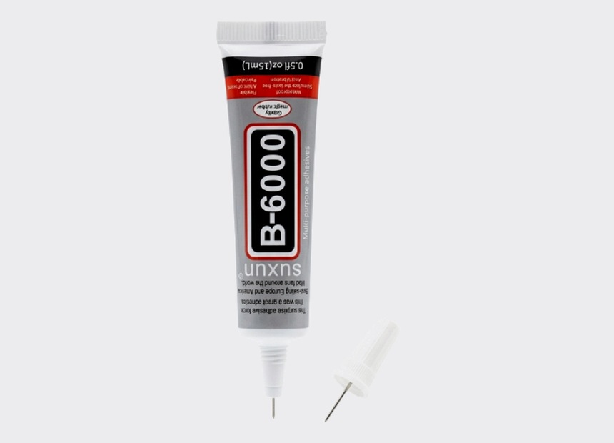
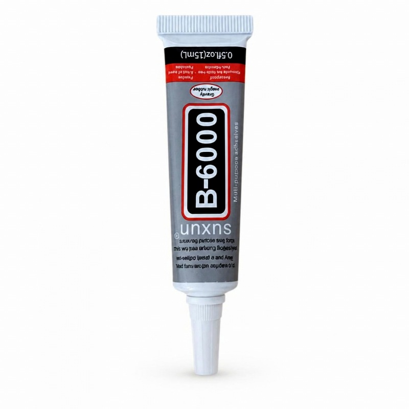
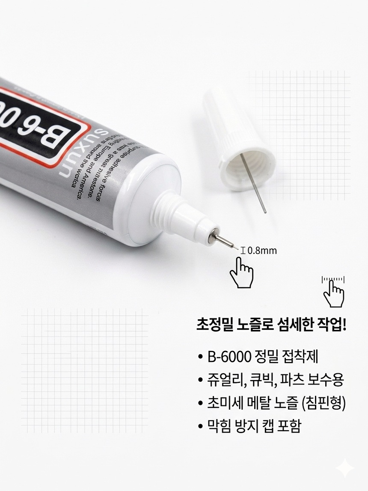
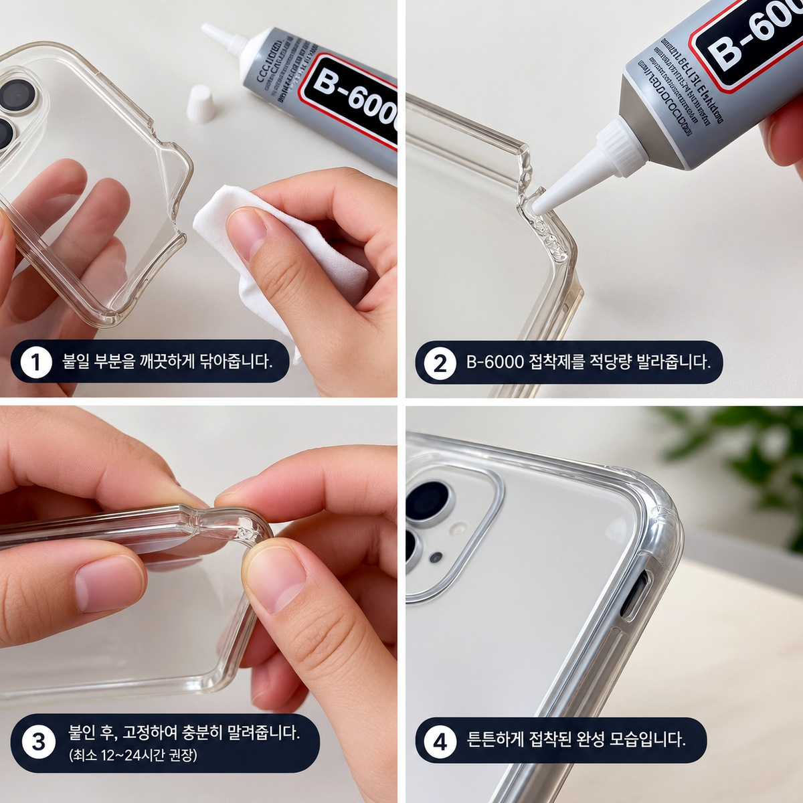
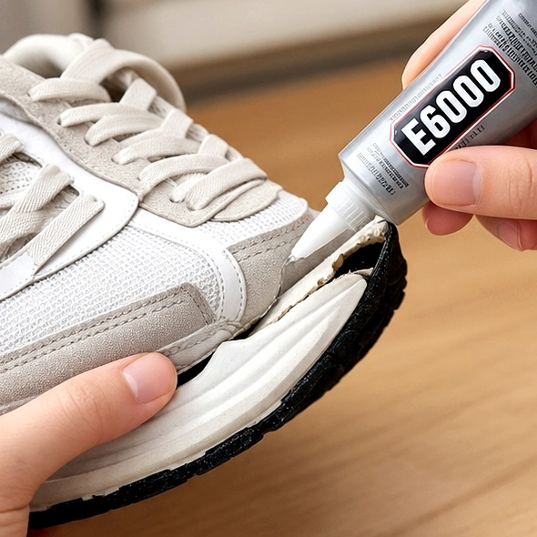
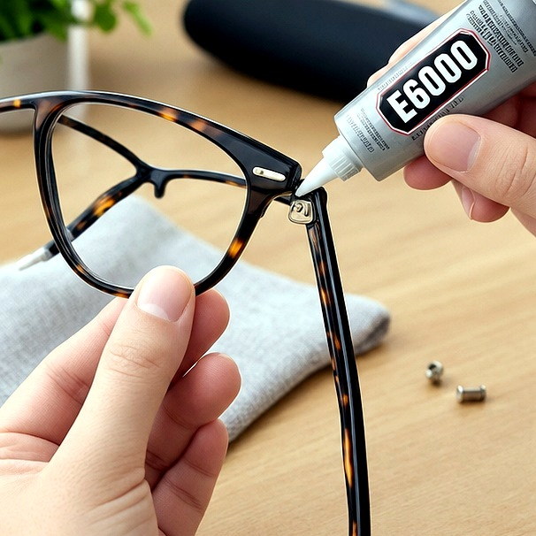
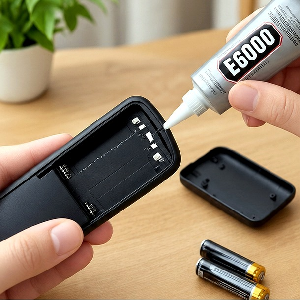

0.8mm 초정밀 노즐로 좁은 틈새·작은 파츠에 딱 맞게 도포합니다.
핸드폰 수리, 큐빅·비즈, 미니어처 등 소량·정밀 작업에 알맞은 소용량 접착제입니다.

Size Guide
15ml / 0.5 fl.oz. · 디테일·테스트·소량 작업용
Product Shot

Cap Guide
B6000은 사용이 끝나면 핀 캡을 메탈 노즐에 단단히 끼워 보관해야 합니다.
가느다란 0.8mm 구멍이 막히면 도포가 어려워지므로, 사용 직후 캡을 꼭 닫아 주세요.

0.8mm 초정밀 노즐 · 막힘 방지 핀 캡 필수
Use Case
조금만 쓰는 작업, 좁은 틈새 도포가 필요한 분께 추천합니다.




폰 수리 · 큐빅 · 미니어처 · 액세서리
Curing Time
B6000은 초기 고정 후 완전히 굳기까지 24~72시간이 걸립니다.
얇게 소량 도포한 정밀 작업은 초기 고정 후 움직이지 않게 고정해 두면 깔끔하게 마감됩니다.
Why 15ml
Specification
생활화학제품 안전관리신고번호 — 제 FB25-11-0011호
FAQ
B6000은 0.8mm 초정밀 메탈 노즐이 특징인 소용량 정밀 접착제입니다. B7000은 공예·수리용으로 더 널리 쓰입니다.
큐빅·파츠 소량 접착 기준으로 수십 회 사용 가능합니다. 사용 후 핀 캡을 꼭 닫아 보관하세요.
휘발성 성분이 있어 환기가 필요합니다. 보호자 동반·환기된 공간에서 사용해 주세요.
소용량 정밀 접착제 · 큐빅·수리·DIY 최적
STIX